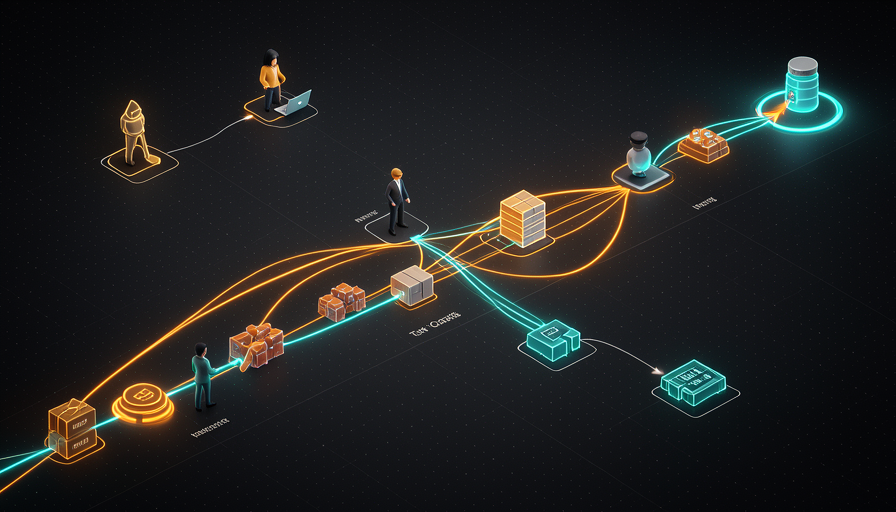
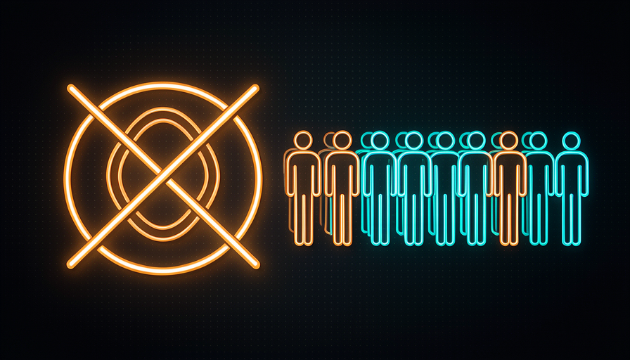

📖 Glosario vivo (los términos nuevos de este módulo)
La ruta 1 ya definió «modelo», «agente», «prompt» y «harness». Aquí quedan solo los términos nuevos de ciclos y colas; apréndelos antes de seguir:
while hace esto: «mientras X siga siendo verdad, repite».while en bash que llama a Claude Code con el mismo prompt una y otra vez, sin parar.agent:implement) que marca el estado y activa automatizaciones.🔁 El bucle Ralph (Huntley)
🧠 Imagínalo así: una lavadora en el ciclo de centrifugado: gira, gira, gira sin parar hasta que alguien aprieta el botón. El Ralph loop es eso con IA: «activas el centrifugado» y el agente repite la misma instrucción en círculos, por su cuenta, toda la noche.
En julio, el ingeniero Geoffrey Huntley publicó un artículo (14/jul) que se volvió viral en la comunidad: el Ralph loop. La idea es deliciosamente sencilla: escribes un bucle while en bash que llama a Claude Code pasando el el mismo prompt una y otra vez. El agente termina una pasada, el loop se reinicia y recibe la instrucción otra vez. Funciona así, en AFK, sin que estés frente al teclado.
El nombre "Ralph" es una broma interna (una referencia al personaje Ralph Wiggum, de Los Simpson, que hace lo simple sin pensar demasiado) — y parte de la gracia está justamente en esto: brutalmente simple y aun así eficaz. ¿Por qué funciona? Porque cada nueva pasada del agente empieza con contexto nuevo y vuelve a leer el estado del codebase y da un paso más. Es la forma más directa de sacarte de la ecuación. El error común aquí es creer que "loop = magia autónoma": el loop solo repite; quien sigue haciendo el trabajo es el agente, y depende del prompt y del harness que tiene detrás.
El bucle Ralph: uno while que vuelve a inyectar el mismo prompt en Claude Code indefinidamente.
⚠️ Error común de principiante
Pensar que basta con «dejar el loop funcionando» y ocurren milagros. Sin una condición de parada, sin un criterio de «listo» y sin un prompt bien hecho, el loop puede girar toda la noche repitiendo el mismo error y consumiendo tokens. El loop es el motor de repetición; la inteligencia sigue estando en tu harness.
En 1 frase: el Ralph loop es un while que llama a Claude Code con el mismo prompt una y otra vez, por su cuenta.
Para profundizar (opcional): ¿de dónde viene «Ralph»?
Huntley bautizó la técnica como "Ralph" en tono de broma: el enfoque es tan directo e ingenuo como el personaje que simplemente hace la tarea obvia en un loop, sin una estrategia sofisticada. La idea clave del artículo es que, contra lo que dicta la intuición, esta simplicidad bruta a veces supera a las técnicas elaboradas, siempre que el prompt y el entorno sean buenos. Es la versión de "fuerza bruta" de la automatización agéntica.
🎯 Por qué loop ≠ respuesta
🧠 Imagínalo así: quieres que alguien pinte una pared. Puedes (a) decirle a esa persona «pinta paredes para siempre» y esperar que acierte con la tuya, o (b) darle una tarea específica: «pinta esta pared de azul». La opción (b) casi siempre es mejor. Loop ≠ tarea.
Aquí entra la postura de Pocock, y es un cambio de perspectiva importante. Reconoce que el Ralph loop es ingenioso, pero dice claramente: "no necesito ejecutarlo en bucle: solo necesito que el agente AFK tome una tarea específica y la haga." En otras palabras, lo que de verdad lo desbloquea no es la repetición infinita; é o AFK (el agente trabajando sin que estés presente). El loop es solo una forma — y no la mejor — de lograrlo.
¿Por qué? Porque un único loop que intenta «hacerlo todo» no coincide con la forma en que trabajan los equipos reales. Un equipo no tiene un robot girando para siempre; tiene un backlog de tareas claras, cada una con principio, desarrollo y final. La repetición a ciegas gasta tokens, pierde el foco y dificulta decir "esto ya está listo". La respuesta correcta, según Pocock, es cambiar el verbo: en vez de "hacer un bucle", piensa en "tomar la siguiente tarea de la cola". La misma autonomía, mucho más control y claridad. Un error común es confundir «ejecutarse por su cuenta» (bueno: AFK) con «dar vueltas en círculos» (rara vez es lo que quieres).
Recuperación rápida: para Pocock, ¿qué realmente libera el trabajo autónomo?
En 1 frase: lo que te desbloquea es el AFK (una tarea específica hecha sola), no la repetición infinita del loop.
📋 La cola de tareas
🧠 Imagínalo así: la fila de la caja del supermercado. Las personas (tareas) llegan y se ponen en la fila. Cada operador (nodo) llama a la siguiente, la atiende, termina y llama a la siguiente. Nadie se queda «atendiendo para siempre en círculos» — se atiende a un cliente a la vez, hasta que la fila se vacía.
La frase central de Pocock es: "yo pienso en esto principalmente como colas, no loops." Una cola es simplemente tu backlog de tareas. Y da el ejemplo concreto del Sand Castle (su herramienta): él mira las issues, hace el triaje (¿es trivial? ¿es posible?), agrega el label agent:implement y el agente lo implementa mediante GitHub Actions (visto en el módulo 4.3).
Y entonces viene la definición que organiza todo: "todo el desarrollo es solo una" cola de tareas: los PM agregan tareas a la cola y tú las completas; múltiples nodos (devs) toman elementos de la cola." Fíjate cómo esto describe a cualquier equipo de software del mundo, sin ninguna IA involucrada. El PM alimenta la cola; los desarrolladores consumen. La idea de Pocock es que los «nodos» ahora pueden ser agentes en lugar de (o además de) humanos. No cambias el modelo mental del equipo: solo cambias quién toma los elementos. Por eso la fila encaja de forma natural, y el loop único que «lo hace todo» no se ajusta a cómo trabajan los equipos.

En 1 frase: todo desarrollo es una cola: los PM agregan, nosotros (desarrolladores o agentes) tomamos y completamos.
🔎 Triaje y alcance
🧠 Imagínalo así: la sala de urgencias de un hospital. Cuando llega el paciente, la enfermera de clasificación inicial no lo trata en el momento — lo clasifica: leve, urgente, gravísimo. Solo después cada caso va al lugar correcto. La cola de tareas funciona igual: clasificar antes de tratar evita el desperdicio y el caos.
Antes de que un elemento se convierta en trabajo, pasa por clasificación inicial. En el flujo de Sand Castle, Pocock revisa cada issue y responde dos preguntas: ¿es trivial? e ¿es posible? — y esto ya se puede hacer en AFK. Hay una issue real (#795 en su ejemplo), que va cambiando de etiqueta: agent:explore → agent:in-progress, mientras el bot github-actions publica un comentario de "Triage" con un TL;DR y una estimación de Difficulty (dificultad).
¿Por qué esto importa? Porque la clasificación te da alcance — y el alcance es lo que separa una tarea «abordable» de un pedido vago. Cuando el agente recibe «implementa la issue #795, dificultad media, TL;DR: tal», tiene un objetivo claro. Compáralo con «corrige los errores» lanzado en un bucle: no hay por dónde empezar ni cómo saber cuándo terminó. El triage también filtra lo que no debe ir solo al agente (cosas que necesitan una decisión humana). El error común es saltarse la clasificación y volcar todo en la cola sin filtrar; así el agente trabaja duro en el elemento equivocado o tropieza con uno imposible.
La clasificación es un embudo: clasifica cada issue por ¿trivial? e ¿posible? antes de convertirse en trabajo.
🔬 Ejemplo resuelto: el ciclo de vida de una issue en la cola
Sigue la issue #795 ("el botón de exportación no funciona en Safari") avance por la fila:
- 1Llega a la cola — el PM (o un usuario) abre la issue. Estado en bruto, sin análisis.
- 2Label
agent:explore— inicia el triage AFK. El agente investiga y el bot publica: "TL;DR: bug de compatibilidad en Safari. Difficulty: baja." - 3Priorizas — ves que es trivial y seguro. Añade
agent:implement. - 4Label
agent:in-progress— GitHub Actions lo implementa, abre un PR y el punto de control humano queda solo en la revisión final.
En 1 frase: la clasificación inicial (¿trivial? ¿posible?) define un alcance claro: sin ella, el agente trabaja en el elemento equivocado.
👑 El rey medieval
🧠 Imagínalo así: un rey en una sala del trono. Los problemas llegan a la puerta todo el día: una invasión en la frontera, una cosecha perdida, una propuesta de alianza. El rey no corre hacia cada uno; recibe, evalúa y prioriza. Es exactamente la postura de quien dirige una fila.
David (el entrevistador) presentó una analogía que cristaliza la diferencia entre loop y cola: el rey medieval. Piensa en un ministro en una región distante ejecutándose en bucle por su cuenta: puede salir bien o muy mal, y el rey solo se entera cuando el daño ya está hecho. Este es el enfoque de «loop»: autonomía ciega, sin priorización central. El rey sensato no quiere eso.
El rey quiere la enfoque de cola: los problemas le llegan (una invasión, un hambre, una propuesta de acuerdo de marca — donde primero verifica su reputación antes de aceptar), y él prioriza. De 50 bugs que llegan, quizá solo 3 sean críticos, y él decide cuáles abordar ahora. La clave, en palabras de la conversación: tú sigues en el comando. La fila no te quita el poder de decisión; lo concentra en lo que importa. El loop le entrega el reino a un ministro distante; la fila mantiene la corona en tu cabeza. Error común: delegar autonomía sin mantener el punto de priorización: así te conviertes en un rey ausente, y el reino hace lo que quiere.

✗ Loop = ministro distante
- • Se ejecuta solo, lejos de ti y sin priorización.
- • Puede salir bien… o convertirse en un desastre silencioso.
- • Solo descubres el daño al final.
✓ Cola = rey al mando
- • Llegan problemas y tú decides la prioridad.
- • 50 errores, solo 3 críticos por ahora.
- • Autonomía delegada, la corona en tu cabeza.
En 1 frase: sé el rey que recibe y prioriza la fila, no quien entrega el reino a un ministro en un ciclo.
🕸️ Múltiples nodos en la cola
🧠 Imagínalo así: una cocina de restaurante concurrido. Hay una sola fila de pedidos (la comanda), pero varios cocineros. Cada uno toma el siguiente pedido, lo prepara y lo entrega. Más cocineros = la misma fila se vacía más rápido, sin que nadie estorbe a los demás.
Al cerrar el módulo: la mayor ventaja de pensar en una cola es que escala con múltiples nodos. Recuerda la frase de Pocock: "varios nodos (desarrolladores) toman elementos de la cola." Cada nodo puedes ser tú, un colega o un agente que se ejecuta en GitHub Actions (módulo 4.3). Como cada tarea tiene un alcance claro (gracias a la clasificación), dos o tres agentes pueden trabajar en paralelo en elementos distintos sin estorbarse — exactamente lo que viste en el módulo 4.2 sobre paralelizar con sandboxes. El loop único no escala así: es un solo trabajador, dando vueltas. La cola es una arquitectura — abre espacio para «dos, tres, cuatro de ti», como Pocock describe el AFK. Usa el esqueleto de abajo para probar el Ralph loop y siente en la práctica por qué, al final, vas a querer migrar de él a una cola con clasificación:
#!/usr/bin/env bash
# Ralph loop (Geoffrey Huntley, 14/jul) — o esqueleto cru:
# um while que chama o Claude Code com o MESMO prompt, de novo e de novo.
PROMPT="Pegue a próxima tarefa pendente em TODO.md, implemente-a,
rode os testes e marque-a como feita. Se TODO.md estiver vazio, escreva DONE.txt."
while true; do
# injeta o mesmo prompt no agente, em modo AFK (sem você no teclado)
claude code -p "$PROMPT"
# condição de parada: o agente sinaliza que a fila esvaziou
if [ -f DONE.txt ]; then
echo "Fila vazia — encerrando o loop."
break
fi
sleep 2 # respiro entre as passadas
done
# Lição do módulo: isto FUNCIONA, mas é um loop cego (1 nó, foco difuso).
# Prefira virar isto numa FILA: triagem -> label agent:implement ->
# vários nós (agentes em GitHub Actions) puxam itens em paralelo. Você, o rei, prioriza.
Recuperación rápida: ¿cuál es la mayor ventaja de la cola frente al loop único?
En 1 frase: la fila es una arquitectura que escala — varios nodos toman tareas claras en paralelo; el loop es solo un trabajador dando vueltas.
🧾 Resumen del módulo
while en bash que llama a Claude Code con el mismo prompt, repetidamente.Próximo módulo:
4.5 — Sistemas auto-mejorables: cron de revisión de seguridad, telemetría → issue → fix, y por qué no necesitas el modelo más caro.